स्कन्ध 11 · अध्याय 15
श्लोक १
श्रीभगवानुवाच–
जितेन्द्रियस्य युक्तस्य जितश्वासस्य योगिनः ।
मयि धारयतश्चेत उपतिष्ठन्ति सिद्धयः ।। १ ।।
जितेन्द्रियस्य युक्तस्य जितश्वासस्य योगिनः ।
मयि धारयतश्चेत उपतिष्ठन्ति सिद्धयः ।। १ ।।
श्लोक २
उद्धव उवाच–
कया धारणया का स्वित् कथं वा सिद्धिरच्युत ।
कति वा सिद्धयो ब्रूहि योगिनां सिद्धिदो भवान्।। २ ।।
कया धारणया का स्वित् कथं वा सिद्धिरच्युत ।
कति वा सिद्धयो ब्रूहि योगिनां सिद्धिदो भवान्।। २ ।।
श्लोक ३
श्रीभगवानुवाच–
सिद्धयोऽष्टादश प्रोक्ता धारणायोगपारगैः ।
तासामष्टौ मत्प्रधाना ता एव (औव) गुणहेतवः।। ३ ।।
सिद्धयोऽष्टादश प्रोक्ता धारणायोगपारगैः ।
तासामष्टौ मत्प्रधाना ता एव (औव) गुणहेतवः।। ३ ।।
भागवततात्पर्यनिर्णय
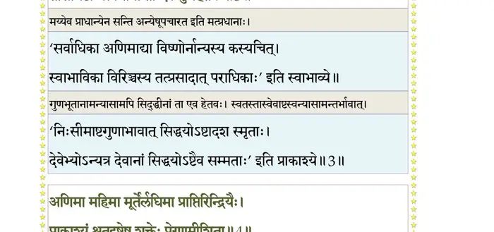
श्लोक ४
अणिमा महिमा मूर्तेर्लघिमा प्राप्तिरिन्द्रियैः ।
प्राकाश्यं श्रुतदृष्टेषु शक्तिप्रेरणमीशिता ।। ४ ।।
प्राकाश्यं श्रुतदृष्टेषु शक्तिप्रेरणमीशिता ।। ४ ।।
भागवततात्पर्यनिर्णय
श्लोक ५
गुणेष्वसङ्गो वशिता यत्कामस्तदवाप्स्यति ।
एता मे सिद्धयः सौम्याष्टावौत्पत्तिका मताः ।। ५ ।।
एता मे सिद्धयः सौम्याष्टावौत्पत्तिका मताः ।। ५ ।।
भागवततात्पर्यनिर्णय
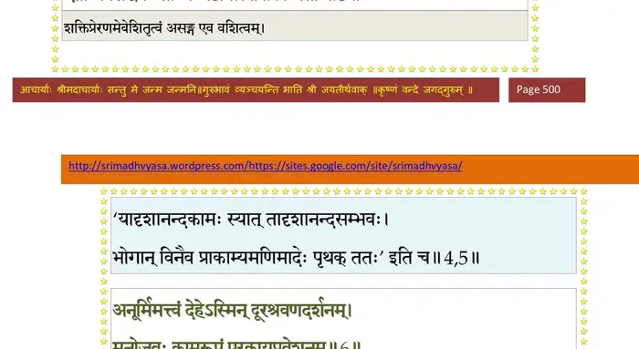
श्लोक ६
अनूर्मिमत्त्वं देहेऽस्मिन् दूरश्रवणदर्शनम् ।
मनोजवः कामरूपं परकायप्रवेशनम् ।। ६ ।।
मनोजवः कामरूपं परकायप्रवेशनम् ।। ६ ।।
भागवततात्पर्यनिर्णय
श्लोक ७
स्वच्छन्दमृत्युर्देवानां सहक्रीडानुदर्शनम् ।
यथासङ्कल्पसंसिद्धिराज्ञाऽप्रतिहतागतिः ।। ७ ।।
यथासङ्कल्पसंसिद्धिराज्ञाऽप्रतिहतागतिः ।। ७ ।।
भागवततात्पर्यनिर्णय
श्लोक ८
त्रिकालज्ञत्वमद्वन्द्वं परचित्ताद्यभिज्ञता ।
अग्न्यर्काम्बुविषादीनां प्रतिस्तम्भोऽपराजयः ।। ८ ।।
अग्न्यर्काम्बुविषादीनां प्रतिस्तम्भोऽपराजयः ।। ८ ।।
भागवततात्पर्यनिर्णय
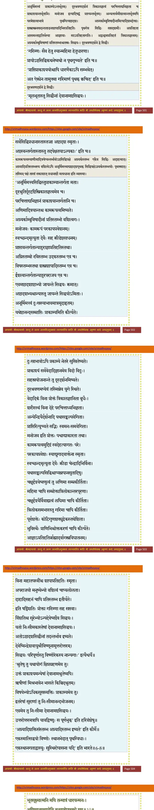
श्लोक ९
एताश्चोद्देशतः प्रोक्ता योगधारणसिद्धयः ।
यया धारणया या स्याद् यथा वा स्यान्निबोध मे।। ९ ।।
यया धारणया या स्याद् यथा वा स्यान्निबोध मे।। ९ ।।
श्लोक १०
भूतसूक्ष्मात्मनि मयि तन्मात्रं धारयन् मनः ।
अणिमानमवाप्नोति तन्मात्रोपासको मम ।। १० ।।
अणिमानमवाप्नोति तन्मात्रोपासको मम ।। १० ।।
भागवततात्पर्यनिर्णय
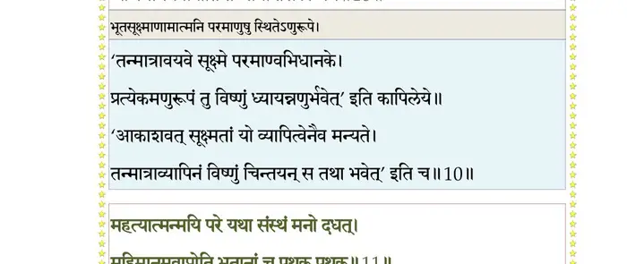
श्लोक ११
महत्यात्मन् मयि परे यथासंस्थं मनो दधत् ।
महिमानमवाप्नोति भूतानां च पृथक्पृथक् ।। ११ ।।
महिमानमवाप्नोति भूतानां च पृथक्पृथक् ।। ११ ।।
भागवततात्पर्यनिर्णय
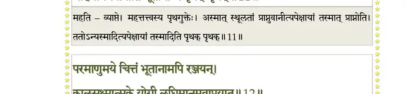
श्लोक १२
परमाणुमये चित्तं भूतानां मयि रञ्जयन् ।
कालसूक्ष्मात्मके योगी लघिमानमवाप्नुयात् ।। १२ ।।
कालसूक्ष्मात्मके योगी लघिमानमवाप्नुयात् ।। १२ ।।
भागवततात्पर्यनिर्णय
श्लोक १३
धारयन् मय्यहन्तत्वे मनो वैकारिकेऽखिलम् ।
सर्वेन्द्रियाणामात्मत्वं प्राप्तिं प्राप्नोति मन्मनाः ।। १३ ।।
सर्वेन्द्रियाणामात्मत्वं प्राप्तिं प्राप्नोति मन्मनाः ।। १३ ।।
भागवततात्पर्यनिर्णय
श्लोक १४
महत्यात्मनि यः सूत्रे धारयन् मयि मानसम् ।
प्राकाश्यं पारमेष्ठ्यं मे विन्दतेऽव्यक्तजन्मनः ।। १४ ।।
प्राकाश्यं पारमेष्ठ्यं मे विन्दतेऽव्यक्तजन्मनः ।। १४ ।।
भागवततात्पर्यनिर्णय
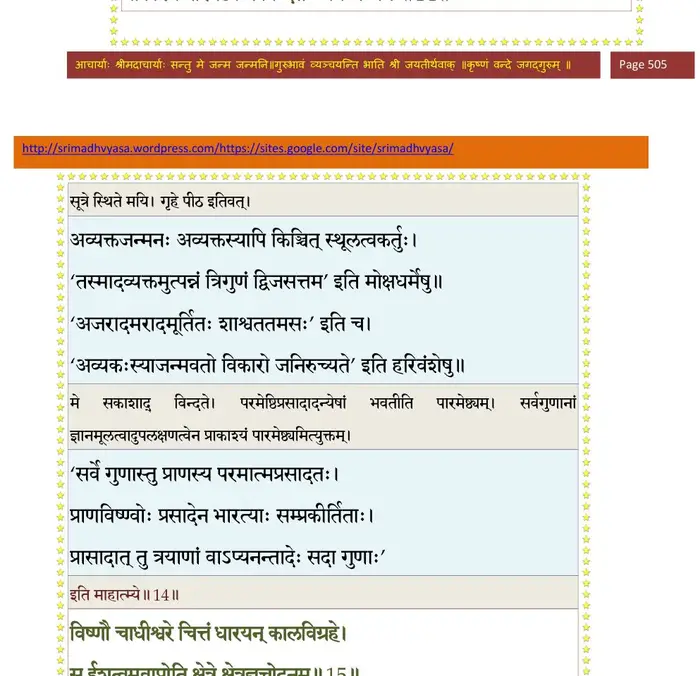
श्लोक १५
विष्णौ चाधीश्वरे चित्तं धारयन् कालविग्रहे ।
स ईशित्वमवाप्नोति क्षेत्रक्षेत्रज्ञचोदनम् ।। १५ ।।
स ईशित्वमवाप्नोति क्षेत्रक्षेत्रज्ञचोदनम् ।। १५ ।।
भागवततात्पर्यनिर्णय
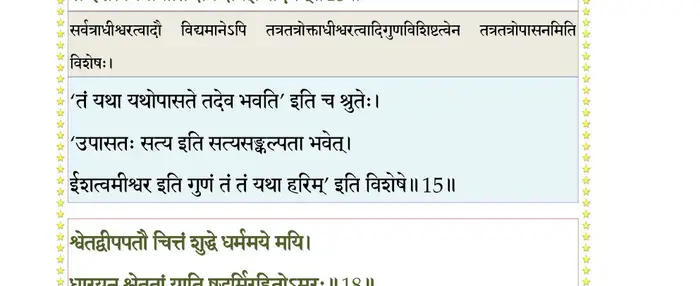
श्लोक १६
नारायणे तुरीयाख्ये भगवच्छब्दशब्दिते ।
मनो मय्यादधद्योगी मद्धर्मो वशितामियात् ।। १६ ।।
मनो मय्यादधद्योगी मद्धर्मो वशितामियात् ।। १६ ।।
श्लोक १७
निर्गुणे ब्रह्मणि मयि धारयन् विशदं मनः ।
परमानन्दमाप्नोति यत्र कामोऽवसीयते ।। १७ ।।
परमानन्दमाप्नोति यत्र कामोऽवसीयते ।। १७ ।।
श्लोक १८
श्वेतद्वीपपतौ चित्तं शुद्धे धर्ममये मयि ।
धारयन् श्वेततां याति षडूर्मिरहितोऽमरः ।। १८ ।।
धारयन् श्वेततां याति षडूर्मिरहितोऽमरः ।। १८ ।।
भागवततात्पर्यनिर्णय
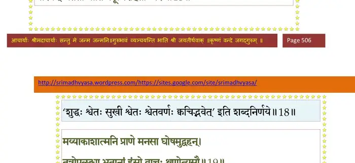
श्लोक १९
मय्याकाशात्मनि प्राणे मनसा घोषमुद्वहन् ।
तत्रोपलब्धाभूतानां हंसो वाचः शृणोत्यसौ ।। १९ ।।
तत्रोपलब्धाभूतानां हंसो वाचः शृणोत्यसौ ।। १९ ।।
भागवततात्पर्यनिर्णय
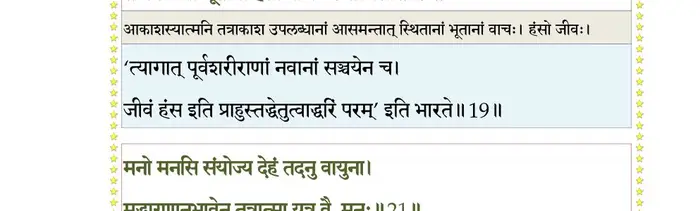
श्लोक २०
चक्षुस्त्वष्टरि संयोज्य त्वष्टारमपि चक्षुषि ।
मां तत्र मनसा ध्यायन् विश्वं पश्यति सूक्ष्मदृक् ।। २० ।।
मां तत्र मनसा ध्यायन् विश्वं पश्यति सूक्ष्मदृक् ।। २० ।।
श्लोक २१
मनो मनसि संयोज्य देहं तदनु वायुना ।
मद्धारणानुभावेन तत्रात्मा यत्र वै मनः ।। २१ ।।
मद्धारणानुभावेन तत्रात्मा यत्र वै मनः ।। २१ ।।
भागवततात्पर्यनिर्णय
श्लोक २२
यदा मन उपादाय यद्यद् रूपं बुभूषति ।
तत्तद् भजेन्मनोरूपं मद्योगबलमाश्रितः ।। २२ ।।
तत्तद् भजेन्मनोरूपं मद्योगबलमाश्रितः ।। २२ ।।
भागवततात्पर्यनिर्णय
श्लोक २३
परकायं विशन् सिद्ध आत्मानं तत्र भावयेत् ।
पिण्डं हित्वा विशेत् प्राणो वायुभूतः षडङ्घ्रिवत्।। २३ ।।
पिण्डं हित्वा विशेत् प्राणो वायुभूतः षडङ्घ्रिवत्।। २३ ।।
भागवततात्पर्यनिर्णय
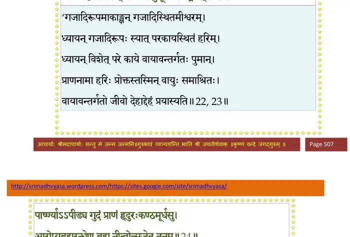
श्लोक २४
पार्ष्ण्याऽऽपीड्य गुदं प्राणं हृदुरःकण्ठमूर्धसु ।
आरोप्य ब्रह्मरन्ध्रेण ब्रह्म नीत्वोत्सृजेत् तनुम्।। २४ ।।
आरोप्य ब्रह्मरन्ध्रेण ब्रह्म नीत्वोत्सृजेत् तनुम्।। २४ ।।
भागवततात्पर्यनिर्णय
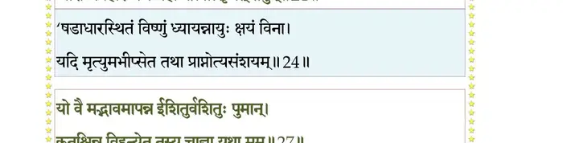
श्लोक २५
विहरिष्यन् सुराक्रीडे मत्स्थं सत्वं विभावयेत् ।
विमानेनोपतिष्ठन्ति सत्ववृत्तिं सुरस्त्रियः ।। २५ ।।
विमानेनोपतिष्ठन्ति सत्ववृत्तिं सुरस्त्रियः ।। २५ ।।
श्लोक २६
यथा सङ्कल्पयेद् बुद्ध्या यथा वा मत्परः पुमान् ।
मयि सत्ये मनो युञ्जन् तथा तत् समुपाश्नुते (समवाप्नुते) ।। २६ ।।
मयि सत्ये मनो युञ्जन् तथा तत् समुपाश्नुते (समवाप्नुते) ।। २६ ।।
श्लोक २७
यो वै मद्भावमापन्न ईशितुर्वशितुः पुमान् ।
न कुतश्चन हन्येत तस्य चाज्ञा यथा मम ।। २७ ।।
न कुतश्चन हन्येत तस्य चाज्ञा यथा मम ।। २७ ।।
भागवततात्पर्यनिर्णय
श्लोक २८
मद्भक्त्या शुद्धसत्वस्य योगिनो धारणाविदः ।
तस्य त्रैकालिकी बुद्धिर्जन्ममृत्यूपबृंहिता ।। २८ ।।
तस्य त्रैकालिकी बुद्धिर्जन्ममृत्यूपबृंहिता ।। २८ ।।
भागवततात्पर्यनिर्णय
श्लोक २९
अग्न्यादिभिर्न हन्येत मुनेर्योगमयं वपुः ।
मद्योगश्रान्तचित्तस्य यादसामुदकैर्यथा ।। २९ ।।
मद्योगश्रान्तचित्तस्य यादसामुदकैर्यथा ।। २९ ।।
भागवततात्पर्यनिर्णय
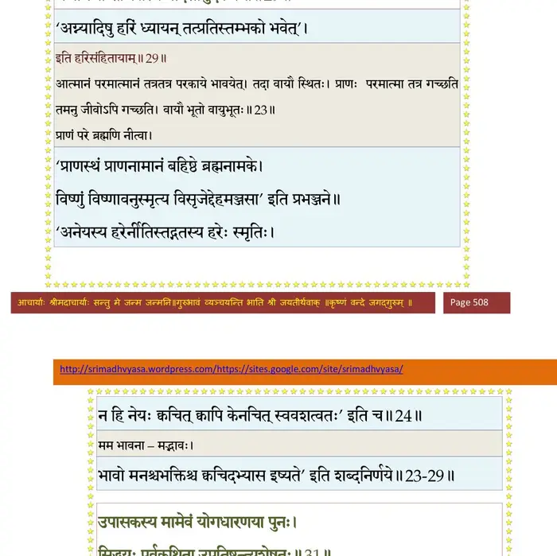
श्लोक ३०
मद्विभूतीरभिध्यायन् श्रीवत्सास्त्रविभूषिताः ।
ध्वजातपत्रव्यजनैः स भवेदपराजितः ।। ३० ।।
ध्वजातपत्रव्यजनैः स भवेदपराजितः ।। ३० ।।
श्लोक ३१
उपासकस्य मामेवं योगधारणया पुनः ।
सिद्धयः पूर्वकथिता उपतिष्ठन्त्यशेषतः ।। ३१ ।।
सिद्धयः पूर्वकथिता उपतिष्ठन्त्यशेषतः ।। ३१ ।।
भागवततात्पर्यनिर्णय
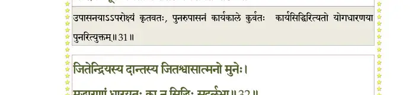
श्लोक ३२
जितेन्द्रियस्य दान्तस्य जितश्वासात्मनो मुनेः ।
मद्धारणां धारयतः का नु सिद्धिः सुदुर्लभा ।। ३२ ।।
मद्धारणां धारयतः का नु सिद्धिः सुदुर्लभा ।। ३२ ।।
भागवततात्पर्यनिर्णय
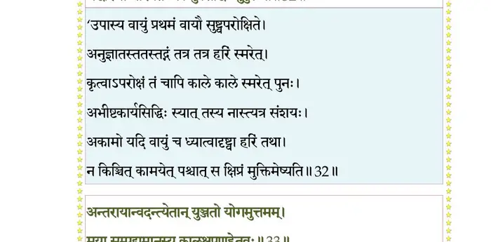
श्लोक ३३
अन्तरायान् वदन्त्येतान् युञ्जतो योगमुत्तमम् ।
मया सम्पद्यमानस्य कालक्षपणहेतवः ।। ३३ ।।
मया सम्पद्यमानस्य कालक्षपणहेतवः ।। ३३ ।।
भागवततात्पर्यनिर्णय
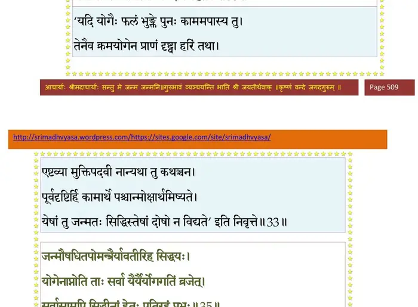
श्लोक ३४
जन्मौषधितपोमन्त्रैर्यावतीरिह सिद्धयः ।
योगेनाप्नोति ताः सर्वा यैर्यैर्योगगतिं व्रजेत् ।। ३४ ।।
योगेनाप्नोति ताः सर्वा यैर्यैर्योगगतिं व्रजेत् ।। ३४ ।।
श्लोक ३५
सर्वासामपि सिद्धीनां हेतुः पतिरहं प्रभुः ।
अहं योगस्य साङ्ख्यस्य धर्मस्य ब्रह्मवादिनाम् ।। ३५ ।।
अहं योगस्य साङ्ख्यस्य धर्मस्य ब्रह्मवादिनाम् ।। ३५ ।।
भागवततात्पर्यनिर्णय
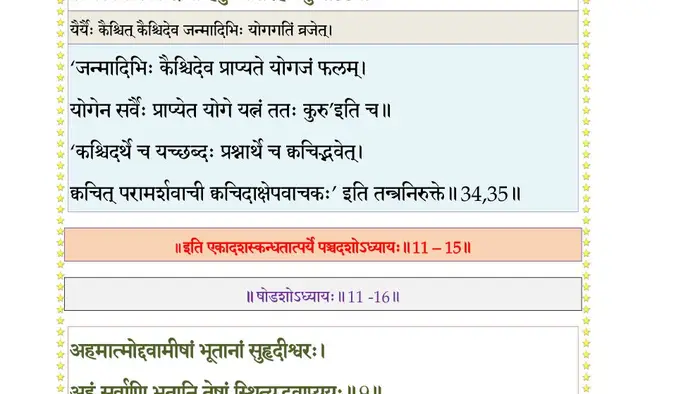
श्लोक ३६
अहमात्माऽन्तरो बाह्योऽनावृतः सर्वदेहिनाम् ।
यथा भूतानि भूतेषु बहिरन्तस्त्वहं तथा ।। ३६ ।।
यथा भूतानि भूतेषु बहिरन्तस्त्वहं तथा ।। ३६ ।।
।। इति श्रीमद्भागवते एकादशस्कन्धे पञ्चदशोऽध्यायः ।।